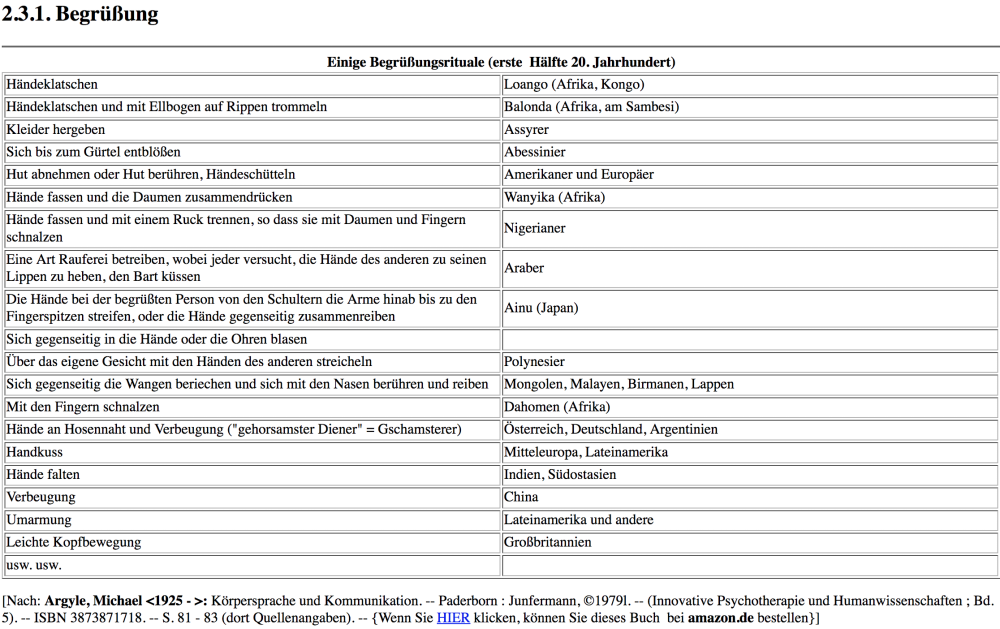
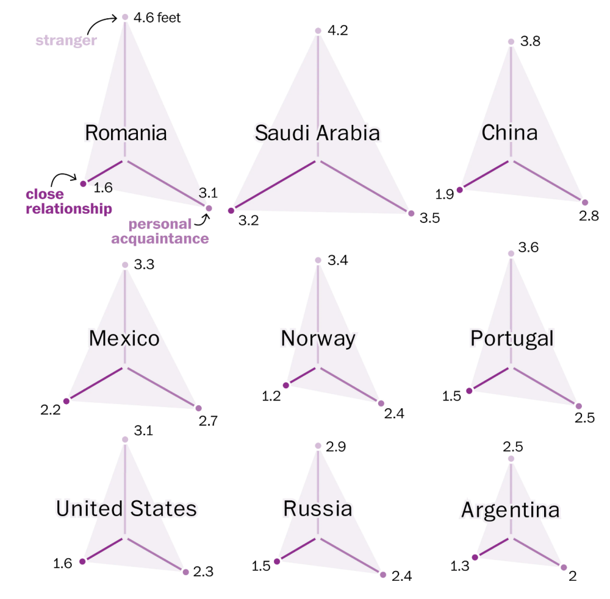

5.8 Physische Grenzen


Linked file: Emotionale Nähe _ Körperliche Distanze-Hochschule Luzern.pdf
Linked file: NZZ_ Der Weg der Hand – Die Kultur der Berührung in Ostasien.pdf
Linked file: Studie- Proxemik Gierath.pdf
Linked file: Verschiedene Zeitungsartikel_ Nähe-Distanz.pdf